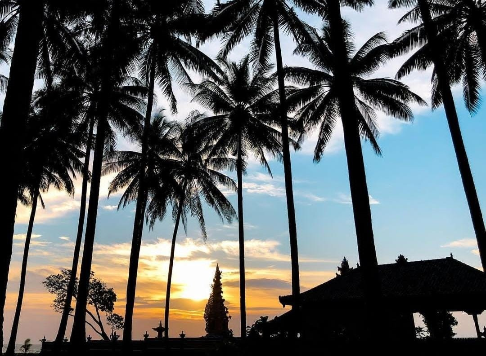

Pantai melasti adalah pantai yang terletak dikawasan Pesisir Barat, Lampung. Nama “Melasti” sendiri merupakan nama upacara keagamaan Hindu. Yap, benar jika kalian membayangkan pantai ini serasa berada di Bali dengan nuansa Pura yang cukup besar.
Kehadiran pura ini menjadikan Pantai Melasti berbeda dengan pantai lainnya yang membuat kesan Bali muncul sehingga wisatawan pun merasa ada di Pulau Dewata. Apabila bila tengah ada upacara keagaamani, suasana Bali pun kian kental. Melasti ini lekat dengan masyarakat Bali, karena merupakan salah satu upacara dari umat Hindu sebagai pensucian diri saat menyambut Hari Raya Nyepi.
By the way, ikonik dari Pantai Melasti ini yaitu Pura yang tampak menonjol, dan tentunya melatarbelakangi Pantai Melasti dengan pasir putih nan panjang. Pantai yang memiliki pasir putih yang halus. Air laut yang berwarna biru jernih sehingga sangat memanjakan mata kalia.
Pohon kelapa berjejer disekitar pantai yang menambah kesan eksotis di objek wisata ini. Dan biasanya selain berfoto dengan background pantai, wisatawan pun kerap memadati Pura Tirta Bhuana sebab sangat disayangkan jika kita tidak memotretnya.
untuk mencari lokasi Pantai Melasti ini sangat sangat mudah dikarenakan akses jalannya berada di pinggir jalan raya bengkunat-Krui, Pesisir Barat Provinsi Lampung yang merupakan jalur lintas Sumatera. Jalan ini selalu ramai karena menghubungkan Provinsi Lampung dengan Bengkulu.